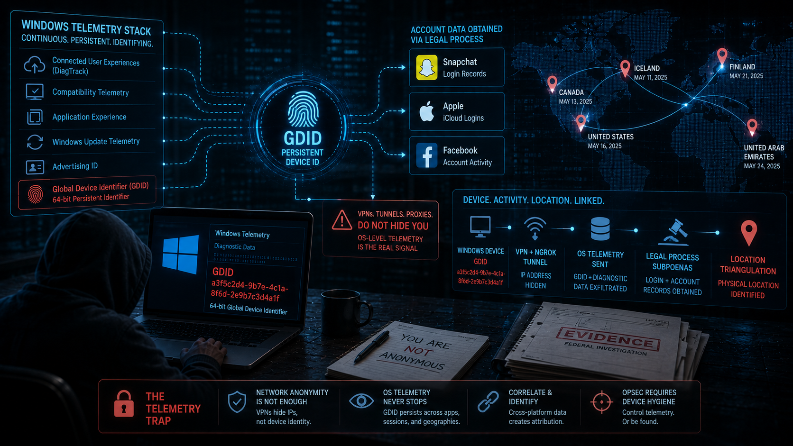
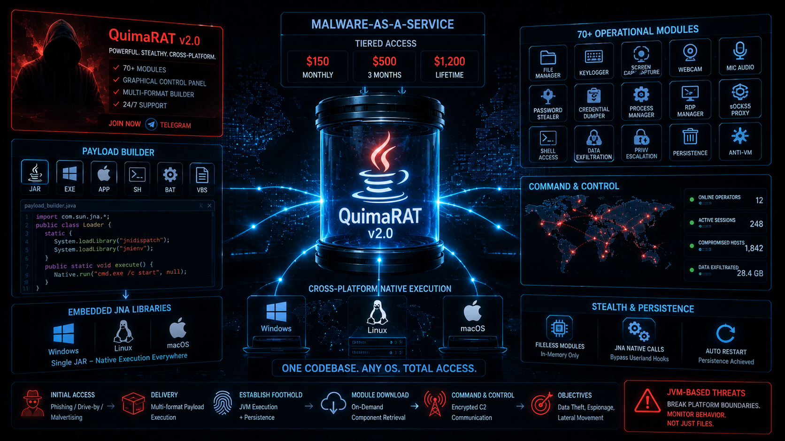
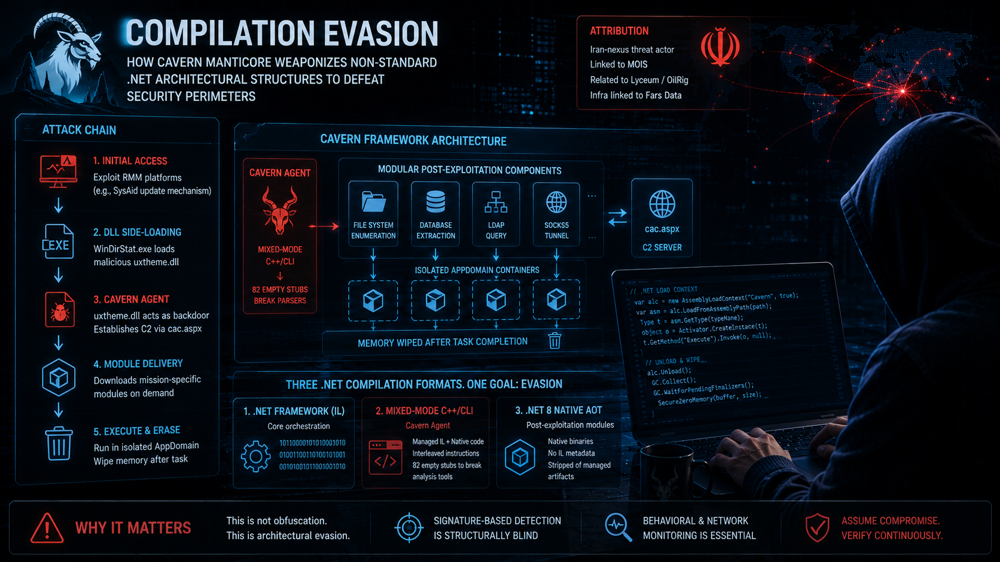

Current Ops
Analysis on threat actors, vulnerabilities, emerging attack techniques, and cybersecurity strategy — written to be understood, not just read, because security awareness starts here.
On July 7, 2026, Cisco Talos Intelligence Group published technical findings documenting the continued expansion of a China-nexus operational relay infrastructure campaign attributed to the threat broker designated UAT-7810. Rather than conducting intelligence collection directly, UAT-7810 functions as a specialized infrastructure provisioner, building and maintaining the "LapDogs" Operational Relay Box network — a layered proxy architecture that allows downstream espionage actors to conduct operations through compromised residential and commercial networking devices while appearing to originate from trusted domestic sources.
The expansion centers on a new modular malware suite — LONGLEASH, DOGLEASH, and JARLEASH — designed to infect multi-architecture edge devices, establish covert command channels, and self-erase forensic traces upon detection. For enterprise defenders, the operational consequence is direct: IP-based perimeter indicators and geolocation blocking are no longer sufficient detection mechanisms against this class of infrastructure. Behavioral detection, protocol anomaly hunting, and systematic edge-device firmware hygiene must now be treated as foundational controls rather than supplementary ones.
Key Finding: UAT-7810 operates not as a direct intrusion actor but as a specialized infrastructure broker — building and leasing ORB relay capacity to downstream espionage groups, making attribution structurally expensive while keeping operational costs low. LONGLEASH's self-erasing anti-forensic routine eliminates binary artifacts and logs upon detection, meaning out-of-band network telemetry is the only forensic source that survives a sophisticated deployment.
Read more →
In July 2026, federal prosecutors unsealed charges against Peter Stokes, a 19-year-old alleged Scattered Spider operative apprehended in Finland, whose identification and location tracking were enabled in significant part by Microsoft telemetry logs mapping a persistent Windows device identifier — the Global Device Identifier — to his activity across multiple platforms.
Read more →
Security researchers at LevelBlue Labs published a detailed analysis on June 25, 2026, documenting QuimaRAT, a Java-based Remote Access Trojan actively marketed across dark web forums under an industrialized Malware-as-a-Service subscription model offering tiered access from $150 monthly to $1,200 for lifetime licensing.
Read more →
Published July 7, 2026In July 2026, Check Point Research published a technical analysis of Cavern Manticore, an Iran-nexus cyber espionage group attributed to actors linked to the Ministry of Intelligence and Security and assessed as related to the Lyceum and OilRig subgroups.
In July 2026, the Sysdig Threat Research Team documented a threat actor designated JADEPUFFER executing the first confirmed end-to-end agentic ransomware campaign—a fully autonomous operation in which a large language model agent conducted intrusion, lateral movement, credential harvesting, and irreversible database destruction without human operator involvement.
Between March and June 2026, a threat actor group designated TeamPCP executed a cascading software supply chain campaign that compromised foundational developer tools, infected an estimated 518 million cumulative package downloads across 172 upstream packages, and deployed a self-propagating credential-harvesting worm designated Shai-Hulud 3.0 across npm, PyPI, and GitHub Actions ecosystems.
On July 2, 2026, the Federal Bureau of Investigation, the IRS Criminal Investigation division, and Google's Threat Intelligence Group executed a coordinated global takedown of the NetNut proxy network—also tracked as the Popa botnet—dismantling infrastructure commanding at least 2 million infected residential devices that had served as anonymous routing infrastructure for hundreds of threat clusters spanning ransomware operations to state-sponsored espionage.
On June 30, 2026, CISA issued Medical Advisory ICSMA-26-181-01 disclosing five high-severity vulnerabilities in the OFFIS DICOM Communications Toolkit, an open-source library embedded in thousands of commercial imaging systems and diagnostic workstations worldwide.
Microsoft's May 2026 security patches addressed a critical remote code execution vulnerability (CVE-2026-45659) in on-premises SharePoint Server 2016, 2019, and Subscription Edition, stemming from unsafe .NET deserialization of untrusted object streams.
Mid-2026 threat intelligence reveals a critical paradigm shift in cloud credential compromise. The "ConsentFix" attack methodology, combining OAuth consent phishing with copy-paste social engineering, completely bypasses traditional Multi-Factor Authentication by operating entirely after successful user authentication.
Security researchers and vulnerability analysts have become targets of a sophisticated campaign distributing trojanized proof-of-concept exploit repositories on GitHub. The "ChocoPoC" Remote Access Trojan campaign, discovered by YesWeHack and Sekoia, exploits the professional urgency of cybersecurity practitioners by distributing weaponized repositories for high-severity, newly disclosed vulnerabilities.
WhatsApp's transition to unique usernames represents the platform's most significant architectural change in its 17-year history, fundamentally decoupling user identity from phone numbers at a service with 3 billion users.